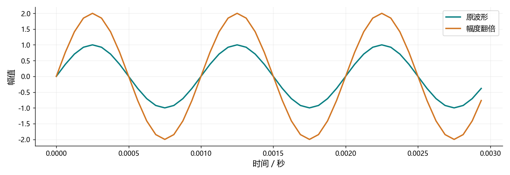

看图理解 · 跟着推演 · 对照真实结果
第18课 · 音频概念不再混：从一段波形检查单位
用 1 kHz 波形串起采样率、周期、FFT、分贝和实时因子，建立排错习惯。
点播放开始；点右侧小节可跳到不懂的部分。进度保存在当前浏览器。
先看视频，再动手
不必先读完正文。跟着视频暂停预测，看到运行图时解释横轴、纵轴和曲线，再做下面的自测。完整图文保留作查阅；视频讲清本课核心算例，不把看完等同于掌握全部专题。
先修：可作为基础复习；不熟悉的部分返回对应正文。
- 用单位区分常见音频名词
- 读懂波形和频率格点的关系
- 按证据定位错误而非只背缩写
跟着运行：注释代码、实际输出与结果图
下面代码在生成本站时实际执行。这里只是教学小实验，不是完整模型训练或业务设备测评。
import numpy as np
fs, f0, nfft = 16000, 1000, 512
# 三毫秒波形：一千赫兹应出现三个周期
t = np.arange(48) / fs
wave = np.sin(2*np.pi*f0*t)
double = 2 * wave
rms = np.sqrt(np.mean(wave**2))
rms2 = np.sqrt(np.mean(double**2))
gain_db = 20*np.log10(rms2/rms)
print("10 ms 样点数", int(fs*0.01))
print("周期", 1000/f0, "ms；FFT 间距", fs/nfft, "Hz")
print("幅度翻倍的电平变化", round(gain_db, 2), "dB")
print("48 kHz 双声道 16 bit PCM", 48000*2*16//8, "字节/秒")
本次实际输出
10 ms 样点数 160 周期 1.0 ms；FFT 间距 31.25 Hz 幅度翻倍的电平变化 6.02 dB 48 kHz 双声道 16 bit PCM 192000 字节/秒

闭卷自测：16 kHz 的 1 kHz 正弦幅度翻倍后，每周期样点数与电平变化分别是什么？
仍为 16000/1000=16 点每周期，频率不变；同一参考下幅度电平增加 20log10(2)≈6.02 dB。
逐字讲稿 · 可定位回看
这一课不是要你一口气记住所有缩写。我们只抓一段一千赫兹正弦，采样率一万六千赫兹，看看同一个数字在不同位置到底是什么意思。
读图或读代码时先问四个问题：这个对象是什么，横纵轴是什么，单位是什么，它服务于什么任务。很多看似深奥的错误，实际上是把两个不同对象的长度或单位混了。
你可以把本视频当闭卷检查：每道题先暂停预测，再看动画和结果。不懂时回到对应正文补前置概念，比继续背下一批模型名字更能形成稳定基础。
采样率一万六千表示每秒记录一万六千个样点。信号频率一千表示这个正弦每秒重复一千周期，两者都用赫兹，但一个数记录次数，一个数振动周期。
一万六千除以一千等于十六，所以每个周期有十六个采样位置。一千赫兹的周期是一毫秒，三毫秒里会出现三个周期，与声音幅度多大无关。
如果只改文件声明的采样率而不重采样，播放器会按另一节奏读同一组数字，时长和音调都可能变化。正确重采样则是重新计算新时间格点上的信号。
假设四万八千赫兹、双声道、每个样点十六位。一秒共有四万八千乘二个采样值，每个十六比特，再除以八，把比特换成字节。
结果是一秒十九万二千字节，没包括文件容器头。这里说的是未压缩 PCM，不能把同样公式直接当压缩音频的实际码率，压缩后的存储还取决于编码方式。
位深描述每个采样值可用多少位表示，码率描述每秒多少比特，采样率描述每秒多少点。看到一个数字先补完整单位，就能避免把高码率误认为高音调。
窗长决定一次截取多少样点，帧移决定相邻窗起点相差多少。它们可以不同，因此帧通常重叠。不能因为每十毫秒来一次结果，就断言窗也只有十毫秒。
一万六千赫兹下五百一十二点 FFT 的频率格点间距是一万六千除五百一十二，等于三十一点二五赫兹。这里的格点间距不要直接等同所有情况下的分辨能力。
给同一短窗补零，可以让显示的频率格点更密，但没有观察到更长的真实声音。窗函数和观测长度仍影响分开相近频率的能力，漂亮细曲线不等于新增信息。
对同一阻抗或同一信号尺度的比较，功率与幅度平方有关。幅度翻倍会让平方量变成四倍，所以电平增加十乘以四的对数，约六点零二分贝。
也可以直接用二十乘以幅度比二的对数，得到相同结果。功率只翻倍时才是约三点零一分贝，不能把两种翻倍混成同一句话。
零分贝表示某个比值为一或等于约定参考，不自动等于静音。零分贝信噪比表示信号和噪声能量相同；数字音频的零 dBFS 又涉及满量程参考。
时间轴用样点编号除采样率生成，四十八点对应三毫秒长度的采样片段。正弦频率一千，所以图中能看见三个周期，第二条线只是每个数乘二。
RMS 先平方、再平均、最后开方。两条线有完全相同的周期，幅度比为二，RMS 比也为二，所以二十倍对数得到六点零二分贝。
最后几行把十毫秒样点数、周期、FFT 格点和 PCM 数据量分别打印。它们来自不同公式，请检查每个单位；这不是校准过的真实声压级或主观响度测试。
两条曲线的波峰出现在相同时间，过零位置也相同。第二条更高、更低，但没有横向压缩，所以周期仍是一毫秒，不是音高提高了一倍。
实际输出显示十毫秒为一百六十点，FFT 间距三十一点二五赫兹，幅度电平增加约六点零二分贝。每个结果都能用前面单位关系独立复算。
这段合成波形幅度翻倍后超过正负一，是数学数组允许的。若保存为受限音频格式，要检查缩放和削波，不能直接认为所有播放链路都能原样容纳这些数值。
VAD 判断何时有语音，不识别说了什么。ASR 输出文字，不自动确认人物身份。TTS 从文本条件产生声音，好听也不代表每个字都生成正确。
AEC 利用已知播放参考估计回声再抑制，不等于主动噪声控制 ANC；后者需要扬声器产生实际反向控制声场。把文件降噪叫主动消声，会混淆物理系统。
声纹比较声音身份特征，日志标记谁在何时说，分离则输出不同声源波形。选指标前先写输出类型，文字错字率、身份误接受率和日志时间错误不能互相替代。
两声道分别能听见，平均后近乎没声，先看极性或相位是否相反。离线正常而分块咔哒响，先查滤波状态和重叠相加，不要立刻断言模型太小。
训练损失很低，换一个人失败，先查数据划分与分布差异。降噪后安静但识别更差，可能伤到辅音尾音或改变输入分布，需要同时看语音保真和文字错误。
一分钟声音处理三十秒，RTF 是零点五，只说明平均计算速度。若先等整分钟录完，首包仍很晚；因果不使用未来，也不等于没有凑帧和排队等待。
请闭卷回答：十六千赫兹下十毫秒多少点？一百六十。幅度翻倍增加多少分贝？同一参考下约六点零二。RTF 零点五能保证首字很快吗？不能。
每次错题只写四行，原想法、实际现象、正确解释、下次检查。比如我以为曲线更高就是音调更高，实际峰的位置没变，所以那是幅度变化。
复习验收不要问自己看过没有，而是拿出一张没有标题的图，解释轴和单位，指出对应代码，再说一个结论不成立的条件。这才是面试时能真正用出来的理解。
适用边界与参考正文
这是数字单位和合成信号复习，不涉及校准声压、真实播放响度或模型业务指标；超过满量程的数组不能不检查就保存播放。
图、公式、代码结果均由本站制作；旁白是本地中文语音合成，不是教师真人录音，也不是 NotebookLM 生成。没有向 Google 上传项目材料。